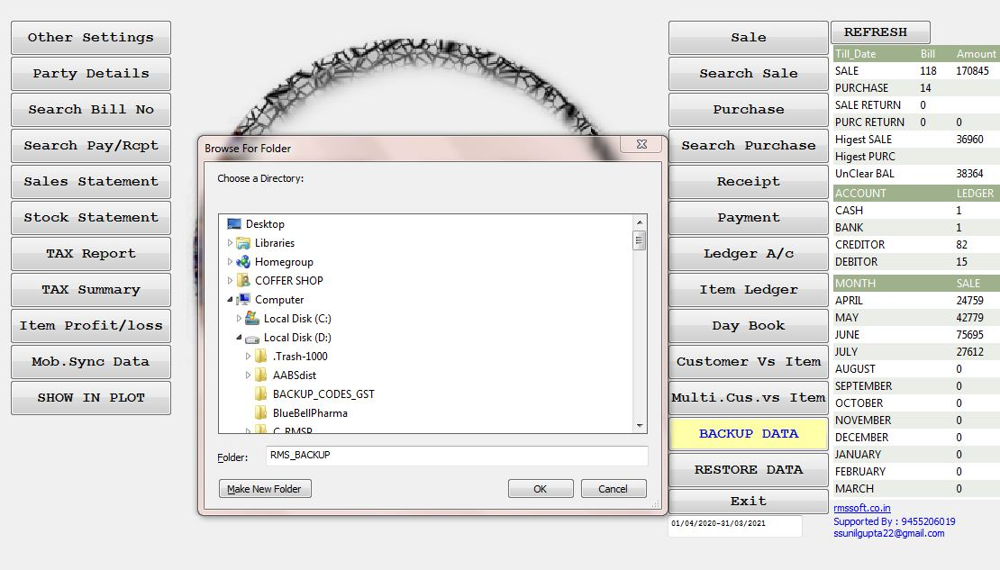
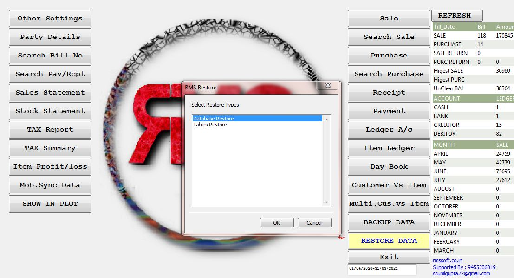

BackUp and Restore DATA
(1): On Front Panel Click or
Press Enter BACKUP DATA
अपना कार्य ख़तम करने के पश्चात,
BACK-UP अवश्य करें।
जिससे आप का कार्य/DATA हमेशा सुरक्षित रहेगा।
Front Panel पर BACKUP DATA का बटन दबाएं ।
BACK-UP अपनेआप RMSSOFT/win_rms/RMS_BACKUP/mrms.sql डायरेक्टरी में चला जायेगा,
वहां से आप mrms.sql को कॉपी कर के कहीं दूसरी जगह रख लें,
जो DATA RESTORE करते समय काम आएगी।

(2): Select Directory Path,
Where you want to save BackUP.
Default Path :
RMSSOFT/win_rms/RMS_BACKUP/mrms.sql
[ आप जहाँ चाहें अपने हिसाब से BACKUP FILE(mrms.sql) का
डायरेक्टरी लोकेशन/Path चुन/Select सकते हैं । ]
Always Take BackUP Before Exit.

(3): If You want to Restore DATA
Press RESTORE DATA button,
Select Directory Where mrms.sql file exists
Press Enter >> RMS will Restore >> Restart RMS
अगर आप को अपना पुराना डाटा फिर से LOAD करना है तो RESTORE DATA का बटन दबाना होगा ।
फिर mrms.sql, जहाँ पर भी कंप्यूटर में रखी हो वहां का लोकेशन/Path दे कर OK का बटन दबाएं,
[ बेहतर यही होता है की जिस डायरेक्टरी में RMSSOFT है mrms.sql भी वहीँ पर रखी जाये ]
RMSSOFT बंद कर के दुबारा स्टार्ट करें आप का पुराना डाटा आ जायेगा ।